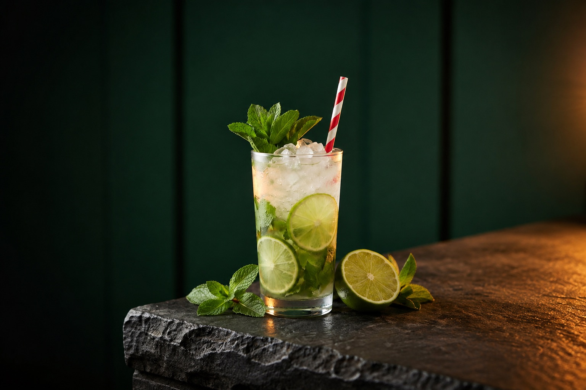
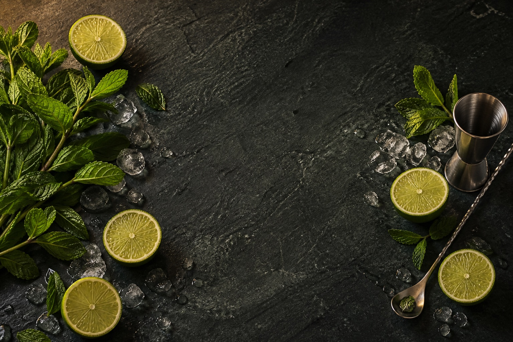

01 / THE CLASSICS / MOJITO
מוחיטו
ליים, נענע, קרח. כמה מרכיבים פשוטים, ורגע אחד של רעננות.

- הבסיסרום לבן
- הכוסכוס גבוהה
- הטכניקהבנייה בכוס
- זמן משוערכ־5 דקות
01 / THE INGREDIENTS
קודם, מניחים הכול על השולחן.
כל מה שצריך לכוס אחת, בפתק אחד.
מוחיטו
מרכיבים לכוס אחת / TWIST
- 45 מ״ל רום לבן
- 20 מ״ל מיץ ליים טרי
- 6 ענפי נענע קטנים
- 2 כפיות סוכר לבן
- סודה קרה להשלמה
- קרח כתוש
לקישוט: ענף נענע ופרוסת ליים.
רשימת המרכיבים מוצגת בגופן המבוסס על כתב ידו של סמ״ר יחזקאל חיזגיל רזילוב ז״ל,
ממיזם אות.חיים. עיצוב הגופן: עטרה גבריאלי.
02 / THE MAKING
עכשיו, מחברים את הכול.
שלושה צעדים מהשולחן אל הכוס.
-
מתחילים בנענע ובליים
מניחים בכוס גבוהה את הנענע, הסוכר ומיץ הליים. מערבבים בעדינות ולוחצים קלות על הנענע, כדי לשחרר את הריח שלה.
תנו לעלים להישאר שלמים ככל האפשר.
-
מוסיפים את הקור
מוסיפים מעט סודה וממלאים את הכוס בקרח. בגרסה המצולמת שלנו השתמשנו בקרח כתוש.
הכינו את כל המרכיבים לידכם לפני שמוסיפים את הקרח.
-
מוזגים ומחברים
מודדים את הרום, מוזגים לכוס ומשלימים בסודה. מערבבים בעדינות בעזרת כף ארוכה, כך שהמרכיבים יתפזרו בכוס.
נשאר רק לקשט בענף נענע ובפרוסת ליים.
הכמויות ושיטת ההכנה מבוססות על IBA. הבחירה בקרח כתוש היא של TWIST.
IBA — MOJITO

KEEP EXPLORING
בפעם הבאה, נגרוני?
ג׳ין, קמפרי וורמוט אדום. שלושה מרכיבים בחלקים שווים.
ממשיכים למתכון